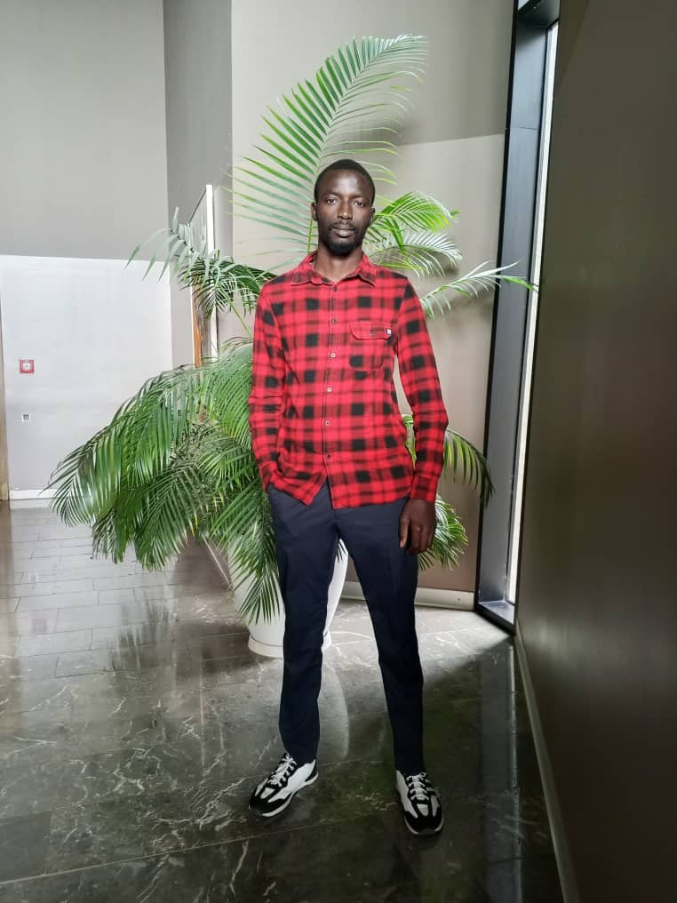

Étudiant en Licence 3 Systèmes, Réseaux et Télécommunications à l'UADB, passionné par la cybersécurité et candidat au poste de Responsable Pédagogique du Cyber Tech Squad (CTS).
DÉCOUVRIR MON PROGRAMME
Application de participation citoyenne pour les différentes communes du Sénégal.
Infrastructure complète sous l'instruction du Dr. Gaye.
Automatisation des demandes d'actes d'état civil. Gain de productivité municipale.
Simulation réseau complexe avec routage dynamique OSPF et RIPv2 sous environnement Cisco.
Mise en place d’un centre de supervision de sécurité pour permettre aux membres d’apprendre la surveillance réseau, l’analyse des logs et la détection d’intrusions.
Création d’un laboratoire virtuel sécurisé pour les formations pratiques en cybersécurité offensive et défensive.
Développement d’outils de collecte d’informations et d’initiation aux techniques d’OSINT pour les membres du club.
Formation et projets pratiques autour de l’utilisation de l’intelligence artificielle dans la cybersécurité moderne.
Organisation de compétitions Capture The Flag (CTF), challenges réseaux et ateliers techniques pour développer l’esprit pratique des membres.
Mise en place d’un système d’accompagnement entre membres débutants et avancés afin de renforcer le partage de connaissances.
Réseaux : OSI, TCP/IP, Subnetting, Wireshark, Services DNS/DHCP/SSH.
Systèmes : Linux (Bash, Quotas, Permissions) & Windows Server (Active Directory).
Dev : Web (PHP/SQL),Langace C, Java.
Bases solides en algorithmique, réseaux et systèmes. Membre actif du CTS.
Spécialisation SRT. Focus sur la cybersécurité offensive/défensive et le management de projet.